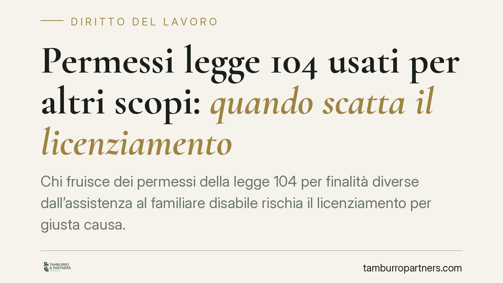

Permessi legge 104 usati per altri scopi: quando scatta il licenziamento
Chi fruisce dei permessi della legge 104 per finalità diverse dall'assistenza al familiare disabile rischia il licenziamento per giusta causa. Una recente ordinanza della Sezione Lavoro della Cassazione conferma questo orientamento, precisando che non serve una misurazione cronometrica del tempo dedicato all'assistenza né la prova di un dolo specifico. Vediamo i confini dell'abuso e le implicazioni pratiche per lavoratori e datori.

Il fatto
Un lavoratore beneficiario dei permessi retribuiti previsti dalla legge n. 104/1992 dedicava all'assistenza del familiare disabile solo una frazione minima della giornata coperta dal permesso, impiegando la parte restante per attività personali del tutto estranee alla ragione dell'assenza.
Il datore di lavoro ha proceduto al licenziamento per giusta causa. La Cassazione, con una recente ordinanza della Sezione Lavoro (estremi da confermare sulla banca dati ufficiale della Corte), ha confermato la legittimità del recesso, qualificando la condotta come abuso del diritto.
Inquadramento normativo
L'art. 33, comma 3, della legge n. 104/1992 riconosce al lavoratore dipendente che assiste una persona con handicap in situazione di gravità il diritto a tre giorni di permesso mensile retribuito. Il permesso è a carico dell'INPS e incide sull'organizzazione del datore di lavoro.
La finalità della norma è vincolata: il permesso serve a garantire l'assistenza al familiare disabile. Quando il lavoratore lo utilizza per scopi diversi, viene meno il presupposto stesso del beneficio. La giurisprudenza qualifica questa condotta come abuso del diritto: l'esercizio di una facoltà riconosciuta dalla legge per uno scopo estraneo a quello per cui è stata attribuita.
Le precisazioni della Corte
Due punti meritano attenzione.
Primo: non è necessaria la prova di un dolo specifico. Ai fini della configurazione dell'abuso non occorre dimostrare che il lavoratore abbia agito con l'intenzione fraudolenta di ingannare il datore. È sufficiente la consapevole utilizzazione del permesso per fini estranei all'assistenza. La distinzione è rilevante sul piano probatorio: al datore basta provare la destinazione del tempo ad attività diverse, non l'elemento psicologico più intenso del dolo.
Secondo: non è richiesta una misurazione cronometrica rigida. La legge non impone che l'intera giornata sia dedicata all'assistenza in senso stretto, poiché rientrano nel beneficio anche attività strumentali (acquisti, pratiche, spostamenti connessi). Ciò che rileva è la manifesta sproporzione tra il tempo destinato all'assistenza e quello impiegato per fini personali. Quando lo scarto è evidente, la condotta integra abuso a prescindere da conteggi al minuto.
Implicazioni pratiche
Per il lavoratore, il permesso ex legge 104 non equivale a una giornata libera. Deve essere funzionalmente collegato all'assistenza del familiare. Un utilizzo palesemente diverso espone al licenziamento per giusta causa, con perdita della tutela reintegratoria nei casi più gravi.
Per il datore di lavoro, la contestazione richiede elementi concreti e verificabili. Il controllo tramite investigatori privati è ammesso solo per accertare condotte estranee all'attività lavorativa e non può tradursi in una sorveglianza sull'adempimento della prestazione in senso stretto. Va inoltre rispettata la vita privata del lavoratore: gli accertamenti devono essere proporzionati e limitati alle circostanze rilevanti.
La legittimità del recesso dipende dalle circostanze concrete del singolo caso, che incidono sulla proporzionalità della sanzione rispetto alla gravità della condotta.
Cosa fare in concreto
Per il lavoratore:
- Utilizza i permessi esclusivamente per finalità connesse all'assistenza del familiare disabile.
- Conserva documentazione utile a ricostruire l'impiego del tempo (visite, pratiche, spostamenti).
- Verifica che le attività strumentali siano effettivamente riconducibili all'esigenza assistenziale.
Per il datore di lavoro:
- Fonda la contestazione su elementi oggettivi e verificabili, non su meri sospetti.
- Assicura che eventuali controlli investigativi rispettino i limiti di legge e la riservatezza.
- Valuta la proporzionalità della sanzione rispetto all'entità e alla frequenza della condotta.
Conclusione
L'orientamento consolida un principio chiaro: il permesso della legge 104 è uno strumento a destinazione vincolata. La sua distorsione rileva sul piano disciplinare anche senza prova del dolo specifico e senza misurazioni al minuto, purché emerga una sproporzione manifesta. Restano centrali, per entrambe le parti, la concretezza degli elementi e il rispetto dei limiti del controllo.
Contributo informativo a cura di Tamburro & Partners Avvocati - Avv. Giuseppe Tamburro. Non costituisce parere legale.
Ogni storia di lavoro ha i suoi tempi.
Se gestisci HR e vuoi un confronto su contenzioso, ispezioni o licenziamenti, scrivi allo studio. Ti rispondiamo entro un giorno lavorativo.